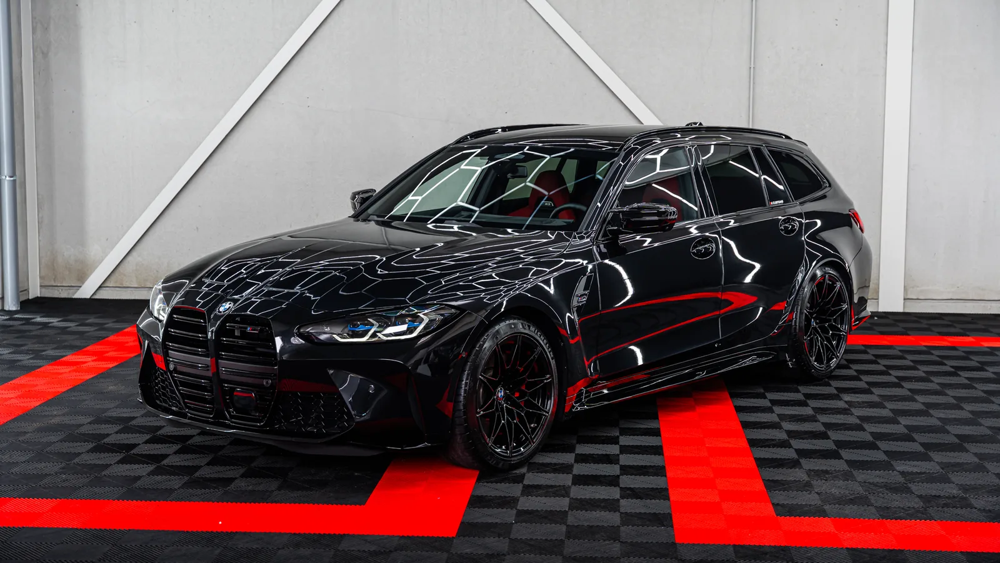
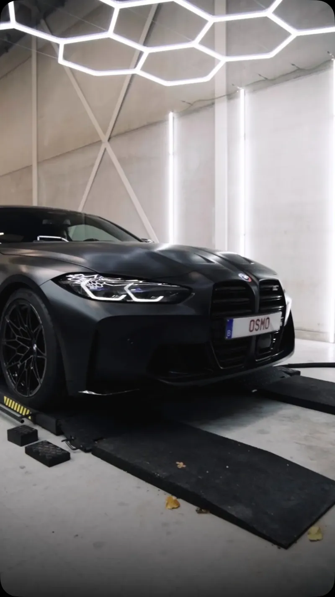
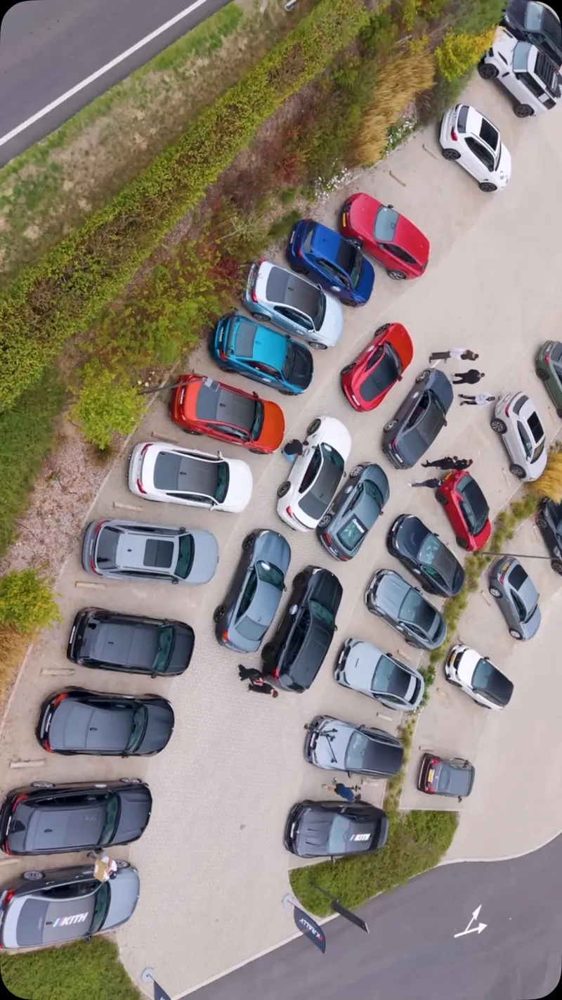
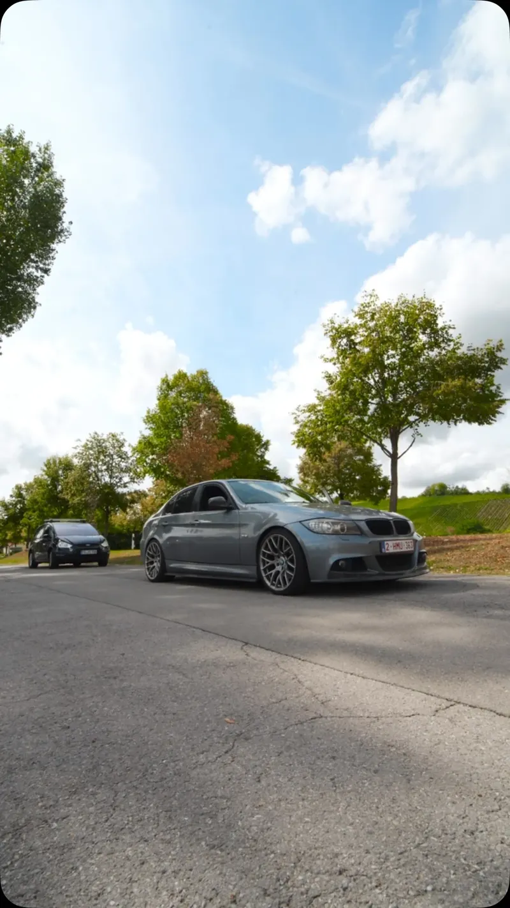
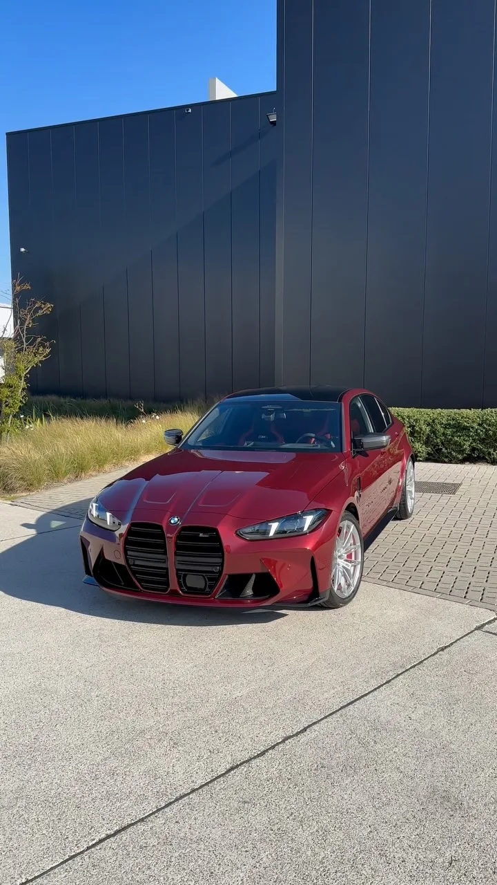

★★★★★
robbe jannsens“Deze man doet wonderen. Auto binnengebracht met krassen en nieuwe auto teruggekregen.”

Een handwas met de 2-emmermethode, lakcorrectie, Gyeon-coating, PPF of een volledige carbon bodykit. Stap per stap, in onze garage in Lier.
Vink aan wat je wil, zet erbij welke wagen het is en stuur het door. Malik laat je snel weten wat het kost en wanneer je terechtkan.

1 of 1KUMO Carbon × MKEen BMW M4 KITH Edition is al zeldzaam. Wij wilden er een echte 1 of 1 van maken, met een volledige carbon bodykit die het agressieve OEM+-karakter van de wagen behoudt. Losse upgrades of een complete build: heb je een idee, dan maken we het waar.
First time was so nice, we had to do it twice.Over de tweede M4 G82 met de volledige KUMO Carbon treatment
Een BMW M3 G80 die bij ons de volledige behandeling kreeg. Zo gaat het bij elke wagen: eerst de basis, dan pas de glans.
Eerst grondig reinigen en voorbereiden. Zonder propere basis geen glans.
Zo onzichtbaar mogelijk, met de randen weggewerkt waar het kan.
Lak én folie samen gepolierd. Swirls verminderd, glans hersteld.
Ook de PPF gaat in de coating. Als extra kregen de carbon kuipstoelen PPF.
Carmeets, CarHikings en elk jaar een rally, met een groep enthousiaste autoliefhebbers.


MK Customs begon op de oprit van Malik. Intussen werken we in een echte garage in Schaarbroek, Lier, onder zeshoeklampen en op een rood-zwarte vloer. De aanpak bleef dezelfde.
“Deze man doet wonderen. Auto binnengebracht met krassen en nieuwe auto teruggekregen.”
“Zeer vriendelijk heel goeie service werkt netjes en voorzichtig doet dit niet alleen met passie maar ook met veel liefde”
“Uitstekende service en vakmanschap! Een tijdje geleden heb ik mijn A45s en C63s laten behandelen bij MK Customs, en ik ben ontzettend tevreden over het resultaat.”

ContactStuur een berichtje met je wagen en wat je wil laten doen. Dan bekijken we samen wat zinvol is.
| Maandag | 9u tot 21u |
| Dinsdag | 9u tot 21u |
| Woensdag | 9u tot 21u |
| Donderdag | 9u tot 21u |
| Vrijdag | 9u tot 21u |
| Zaterdag | 9u tot 21u |
| Zondag | Gesloten |
Ik maakte deze demo voor jullie om te tonen wat er kan. Na een kort gesprek maak ik er iets veel persoonlijkers van, helemaal naar jullie wens.
Vrijblijvend. Ik kom langs of we bellen.
Op maat, op jullie eigen domein.
Geen voorschot. Jullie betalen pas als alles klaar is.
Hosting, domeinnaam en kleine wijzigingen, zoals nieuwe openingsuren.
Omdat een voorbeeld meer zegt dan een mail. Zo zien jullie meteen wat er kan, en het kost jullie niets.
Nee. Het gesprek is vrijblijvend. Vinden jullie het niks, dan is het daarmee gedaan.
Na ons gesprek staat jullie site binnen 10 tot 14 dagen online.
Zeker. Jullie domeinnaam kan gewoon blijven, de nieuwe site komt in de plaats van de oude.
Nee, dat doe ik op basis van ons gesprek. Eigen foto's zijn mooi meegenomen, maar niet nodig om te starten.